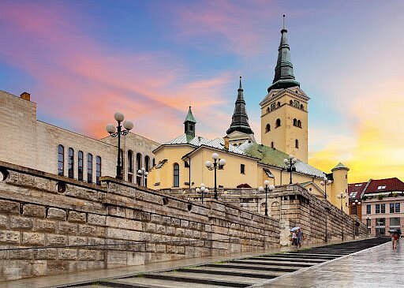

About Žilina
Žilina is a city in north-western Slovakia, around 170 kilometres from the capital Bratislava, close to both the Czech and Polish borders.

Holy Trinity Cathedral
Famous Sites
- Mariánske námestie (Marian Square)
- Budatín Castle
- Holy Trinity Cathedral
Things to do in Žilina
Explore the fairytale vibes of Žilina's old town, where pastel buildings, buzzing cafés, and street art kiss the edges of Mariánske námestie. Then hike up to Budatín Castle by the Váh River—half nature escape, half medieval daydream, all yours to roam. Click on the links below to read more about them: